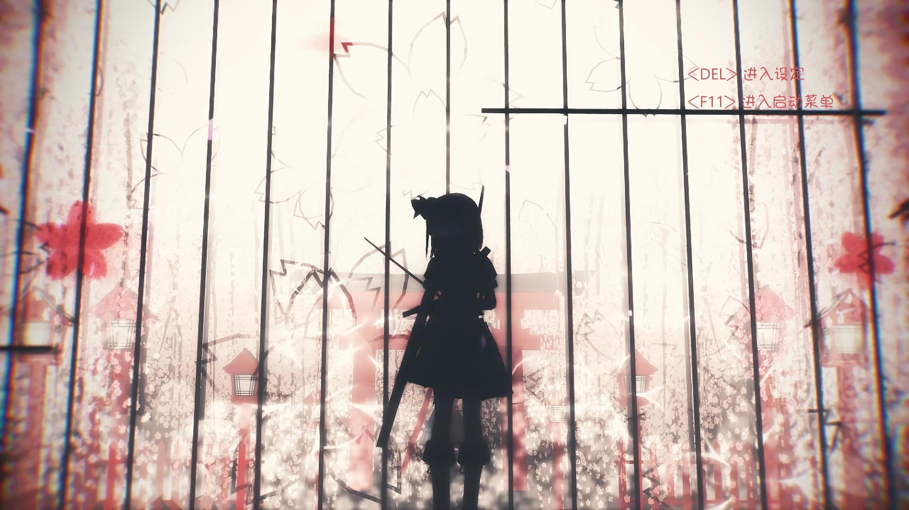

修改 AMI BIOS 的启动 LOGO
MSI 主板的启动图片砍你了，想换一个，可找了好多替换工具都不能换 uefi 下的启动图。
后来用 UEFIExtract 直接把 BIOS 全部解包，找到了图片位置。然后发现不止开机图片，还有启动选单背景图和鼠标指针也能改。
另外刷修改过的 BIOS 有可能把主板变砖。上次搞坏过一次，还好主板有 JSPI1 接口，在某宝买了个编程器刷好了。
准备
需要用到 UEFITool 和 UEFIExtract 、修图软件。
修改BIOS
解包
用 UEFIExtract 解开 BIOS文件。UEFIExtract BIOSfile all
找图
打开解完后的文件夹，搜索 body.bin 。
搜索完 Ctrl+A 全选这些搜索结果，拖到改名工具里面，扩展名改成 jpg 。
改完把搜索结果显示为大图标，向下滚动，就很容易找到图片文件。
然后发现能改的不止 LOGO 。
找到后查看文件路径中的 GUID ，GUID 有两串，要后面的。
可以把图片拖出来并改成前面的复制的名字备用。
用文本编辑器或是十六进制编辑器打开这些图片查看文件头，把图片改回它本来的扩展名。文件头对照，可以用 Ctrl+F 搜索。
像这种就是 JPG/JFIF 的。
改图
查看图片详细信息，把自己的图改成和BIOS里面那张一样格式、差不多大小的。如果存太大了保存的时候会报错，所以不用太担心图片太大把 BIOS 改坏。
UEFI 启动图的高度最好不要太高，不然会被 Windows 的圆圈盖住。
我的启动选单背景图只有改成 1024x768 分辨率才能正常显示，其他的倒是没问题。
还有就是有的 BIOS 只认 JFIF 文件头的图片，Photoshop CC 保存的 JPG 不带 JFIF 文件头，我换用 CS4 解决了。
替换
改完图片之后用 UEFITool 打开BIOS文件，Ctrl+F 搜索要替换的图片的 GIUD 。
展开到 Raw section 右键选择 Extract body… 保存成 jpg 看下是不是要改的那张图。
是的话再右键选择 Replace body… 替换成自己改的图片。
保存
替换完 Ctrl+S 保存 BIOS 。
如果保存的时候出错了，有可能是图片太大了，存小点试试。
刷入
最后刷进主板。
改好的图
LEGACY开机LOGO

启动选单
UEFI开机LOGO
 )
)